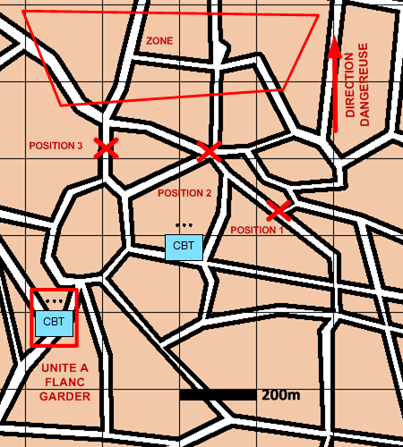

NIVEAU :Pion
ARME :Melee
MISSION :Flanc-Garder
Objectif principal
- Appuyer
- Détruire / Neutraliser
Modalités d'exécution
-
L'unité se place sur une position de flanc-garde qui se situe proche de sa position de départ et de l'unité à flanc-garder et observe ;
-
Si l'unité à flanc-garder s'éloigne et qu'une meilleure position de flanc-garde existe alors l'unité se déplace vers cette position (optionnel) ;
-
L'unité engage les ennemis afin d'interdire ou de freiner vis-à-vis de l'unité flanc-gardée.
Schéma de modélisation

Paramètres obligatoires
Unité : Unité amie à flanc-garder.
A partir de : Positions de flanc-garde à rejoindre suivant la position de l'unité à flanc-garder.
Face à
Points :
Faire face à ces positions.
Zones :
Faire face à ces Zones.
Blocs Urbains :
Faire face à ces Blocs Urbains.
Paramètres optionnels
Direction Dangereuse
Limite gauche / Limite droite
Lignes de début et fin de mission [LDM/LFM]